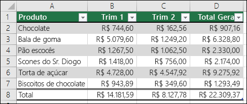

Produto 9. Relatório por Ramo de Atividade comercial ou de serviços –Ramo de Atividade 1
Analista: Naiara Sandi de Almeida Alcantara //Estagiario: Paulo …
12, agosto 2022
1 Introdução
Cada ramo de atividade comercial ou de serviços terá seu relatório específico individual.Este relatório refere-se ao Ramo de Atividade 1.Este relatório tratará deste ramo de atividade apresentando seus resultados pela distribuição da amostra definida pela CONTRATADA, por regiões geográficas e Brasil. De forma a permitir cruzar os dados da distribuição da amostra com os dados da região geográfica e das demais regiões, os dados entre as regiões geográficas e os dados em relação ao Brasil.
1.1 Objetivo:
comparar e estabelecer relações, do mesmo tema, nas diferentes localidades. Por exemplo, a posse de refrigeradores da região Norte, segundo a distribuição da amostra, deverá ser comparada com a posse de refrigeradores das demais regiões (nordeste, centro-oeste, sul e sudeste) e da posse no âmbito nacional, essa regra vale para todos os equipamentos.Portanto o relatório deverá cruzar os principais resultados consolidados no âmbito nacional com os consolidados no âmbito regional (norte, centro-oeste, sudeste, sul e nordeste), com o objetivo de poder comparar e estabelecer relações, do mesmo tema, nas diferentes escalas espaciais.O relatório objetiva: 1) Oferecer uma visão clara e atual da posse e hábitos de uso dos equipamentos elétricos na classe comercial ou de serviços deste ramo de atividade; 2) Destacar os hábitos de consumo dos estabelecimentos comerciais ou de serviços deste ramo de atividade, apresentando os dados desagregados de consumo de cada equipamento pesquisado, avaliando os dados por distribuição da amostra, o nível de conscientização sobre o uso eficiente da energia elétrica, entre outros aspectos.
1.2 Resultados:
Os principais resultados devem ser apresentados na forma de tabelas e textos, sempre comparando a informação por distribuição da amostra, região e Brasil.Todos os dados processados utilizados no relatório, deverão ser disponibilizados pela CONTRATADA para a CONTRATANTE, em formato digital compatível com o aplicativo Excel e com o aplicativo software IBM SPSS.
1.3 Material gráfico:
Alguma coisa/gráfico exemplo (i)

1.4 Explicação do estudo:
A descrição do que foi estudado e das conclusões deverão ser completamente documentadas. Todos os parâmetros do método, técnicas de coleta de dados e ferramentas de análise aplicadas aos dados deverão ser descritos. Os relatórios técnicos da pesquisa deverão ser suficientemente detalhados para permitir análises secundárias.O relatório de pesquisa deverá incluir, entre outras informações, o objetivo da pesquisa, métodos de coletade dados, universo da pesquisa, método amostral (método de seleção, tamanho e composição da amostra, intervalo de confiança e margem de erro), cobertura geográfica, período da coleta de dados, o instrumento de coleta de dados utilizado, além dos resultados já destacados na descrição deste produto.
“Quadro 1 - Síntese dos dados (ii)” 
*A CONTRATADA deverá produzir um relatório que contenha no mínimo os seguintes itens: 1) Capa e contra capa; 2) Sumário; 3) Apresentação; 4) Introdução; 5) Contexto; 6) Objetivos; 7) Aspectos metodológicos; 8) Caracterização dos estabelecimentos deste ramo de atividade; 9) Resultados. ** Utilizar todos esses itens
2 Considerações finais
2.1 Posses e habitos
2.2 Dados:

*Obs.: No capítulo de “Resultados” devem ser demonstrados a posse e hábitos de uso dos equipamentos elétricos e a conscientização quanto as medidas de eficiência energética. Devem ser usadostabelas e textos para compor as informações do relatório.
Fonte: Jumppi, 2022
2.3 Descritivas:
Gráfico 1 – Exemplo de projeções gráficas criadas aqui

3 Resultados
Tabela 1- exemplo de tabela
 Fonte: …
Fonte: …
Tabela 2- exemplo de tabela
Fonte: …
Tabela 3- exemplo de tabela
Fonte: …
4 Informações finais
Após a entrega do produto, a CONTRATANTE terá um prazo de 3 (três) semanas para a 1ª revisão e para encaminhar comentários para a CONTRATADA realizar ajustes, se necessário, para adequar o produto às suas especificações técnicas.A CONTRATADA terá um prazo de 2 (duas) semanas para realizar os ajustes da 1ª revisão, quando solicitados.É previsto ainda mais 1 (uma) semana para que a CONTRATANTE faça a 2ª revisão e encaminhe comentários a CONTRATADA para realização de ajustes, se necessário. E ainda mais 1 (uma) semana para a CONTRATADA realizar os ajustes da 2ª revisão, quando solicitados.Caso os ajustes realizados pela CONTRATADA não atendam às especificações técnicasda ELETROBRAS, novos ajustes serão solicitados à CONTRATADA, até que os produtos estejam de acordo com as suas especificações.